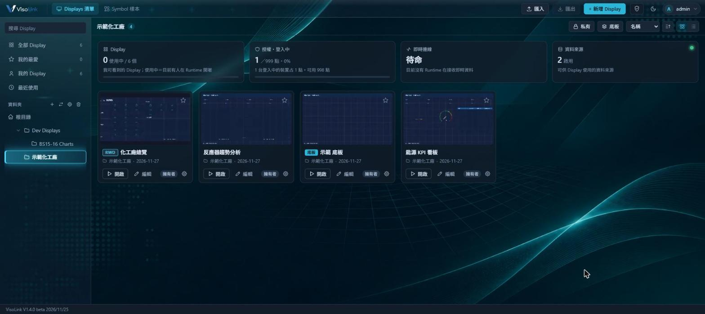
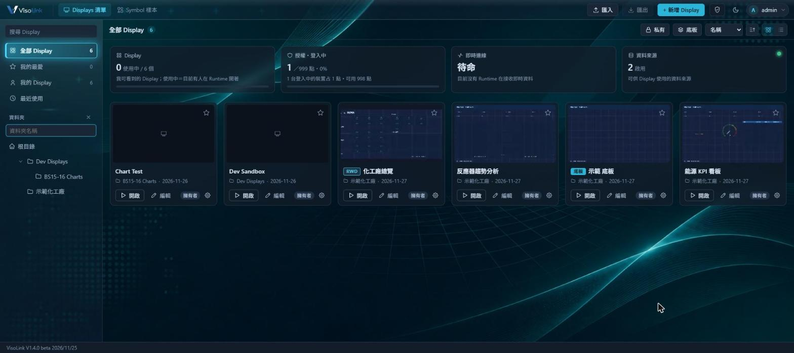
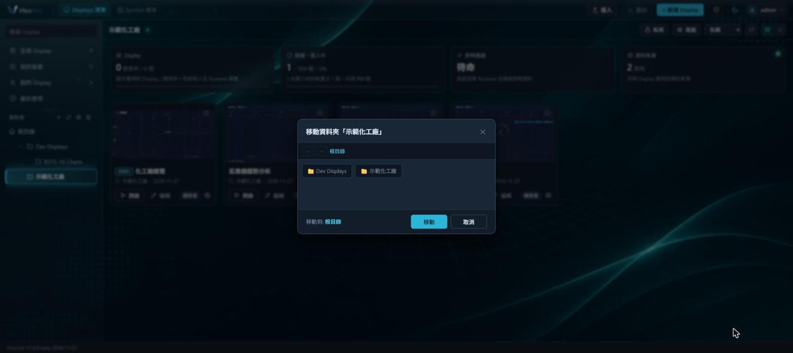
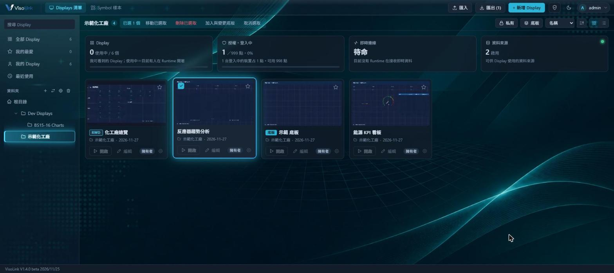
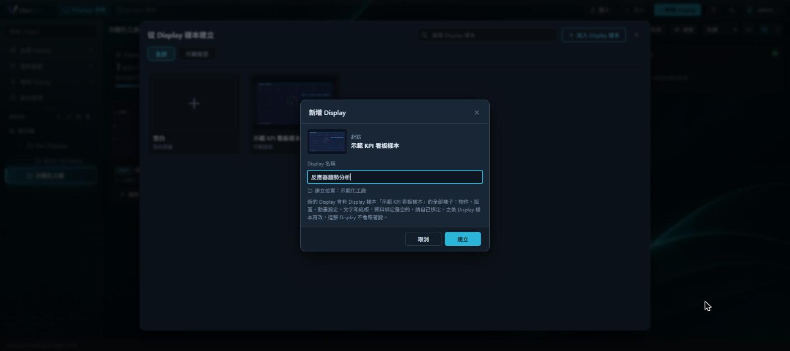
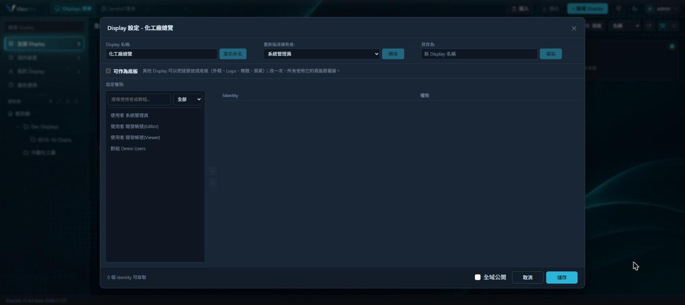
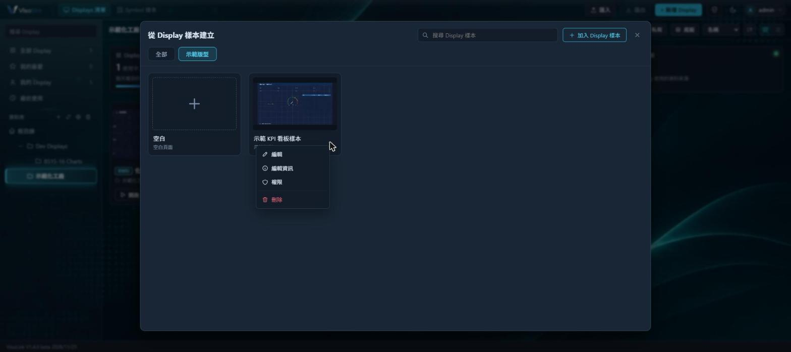
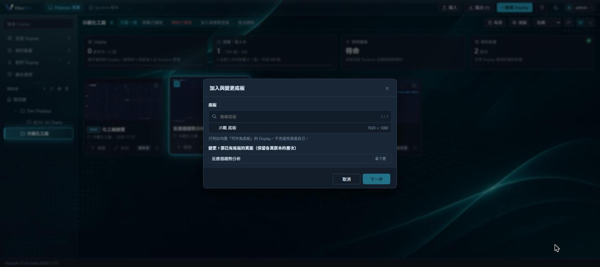
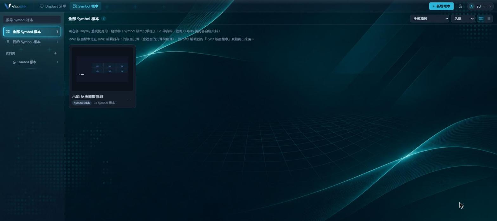
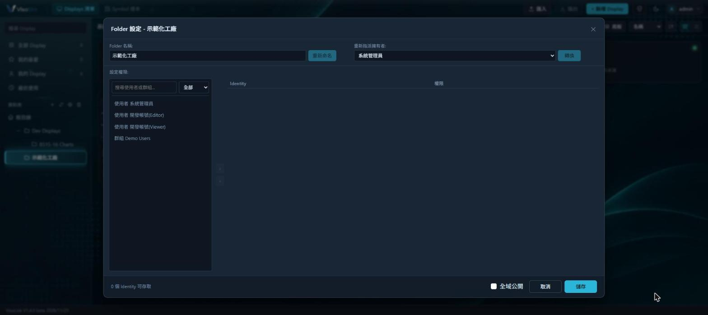

Display Library 圖面庫
Display Library 是前台圖面的管理入口。使用者可以依權限瀏覽、搜尋及整理 Display，並從圖面卡片進入 Runtime、Studio 或設定視窗。
瀏覽圖面庫
圖面庫由左側瀏覽區、Folder 樹狀結構、上方操作列及 Display 顯示區組成。

畫面區域
| 區域 | 用途 |
|---|---|
| 搜尋 Display | 依 Display 名稱縮小目前結果。 |
| 全部 Display | 顯示目前帳號可以讀取的全部 Display。 |
| 我的最愛 | 顯示已加入最愛且目前仍可讀取的 Display。 |
| 我的 Display | 顯示目前帳號擁有的 Display。 |
| 最近使用 | 顯示最近開啟過的 Display。 |
| 資料夾 | 依 Folder 階層瀏覽 Display。 |
| 底板 | 只顯示勾選「可作為底板」的 Display。 |
| 卡片標記 | 「RWD」表示有手機／平板版面；「底板」表示可作為底板；「使用中 N」表示目前有 N 個 Runtime 開著。 |
| 私有 | 切換是否顯示目前帳號有權限查看的私有 Display。 |
| 格狀／表格 | 切換圖面卡片或表格檢視。 |
預期結果：右側顯示目前帳號在所選範圍內可以讀取的 Display。
搜尋與篩選圖面
使用左側搜尋欄、功能檢視、Folder、私有切換及排序控制，快速縮小 Display 範圍。
- 先在左側選擇「全部 Display」、「我的最愛」、「我的 Display」、「最近使用」或指定 Folder。
- 在「搜尋 Display」輸入名稱關鍵字。
- 需要查看私有圖面時，點選上方「私有」。
- 在格狀模式依名稱、修改時間、擁有者或建立時間排序，並使用 ▲／▼ 調整方向。
- 需要查看更多欄位時，切換成表格模式。
注意：搜尋及篩選只會從目前帳號有權限讀取的 Display 中產生結果，不會顯示未授權圖面。
預期結果：Display 顯示區立即更新，只保留符合目前範圍與搜尋條件的圖面。
清單狀態卡、背景與重新載入
清單上方的四張狀態卡快速顯示目前使用情況；清單背景圖由管理者在 Admin 設定，連線短暫中斷時清單會自動重試。
| 狀態卡 | 說明 |
|---|---|
| Display | 目前有人在 Runtime 開著的數量／我可看到的 Display 數。 |
| 授權・登入中 | 已使用點數／總點數；1 台登入中的裝置占 1 點。 |
| 即時連線 | 即時資料推送狀態，沒有 Runtime 接收即時資料時顯示「待命」。 |
| 資料來源 | 可供 Display 使用的資料來源數量與連線燈號。 |
- 登入後查看上方狀態卡。
- 清單背景（深色、淺色主題各一張）由管理者在 Admin「系統設定 → Client 設定」更換，見 Client 設定。
- 暫時連不上伺服器時，清單與 Runtime 會自動重試；仍失敗時顯示「Display 載入失敗，請稍後再試。」與「重新載入」按鈕，點按即可再試一次。
判讀：載入失敗不等於「沒有 Display」或「找不到 Display」；請稍後重新載入，或請管理者確認服務狀態。
建立與編輯 Folder
Folder 用來建立圖面分類階層。新 Folder 會建立在目前選取的 Folder 下方；選取「根目錄」時則建立於第一層。
建立 Folder
- 在左側 Folder 樹狀結構選擇要建立子 Folder 的位置；建立第一層 Folder 時選擇「根目錄」。
- 點選「資料夾」標題右側的「＋」。
- 在「資料夾名稱」輸入名稱。
- 按下 Enter 建立；按下 Esc 或「×」則取消。

重新命名 Folder
- 選取要調整的 Folder。
- 點選 Folder 工具列中的齒輪「Folder 設定」。
- 修改「Folder 名稱」。
- 點選「重新命名」。
預期結果：Folder 出現在指定階層中；重新命名後，左側 Folder 樹同步顯示新名稱。
整理 Folder 與 Display
Folder 可以移動至其他 Folder；Display 則可透過選取功能批次移動至根目錄或指定 Folder。
移動 Folder
- 在左側選取要移動的 Folder。
- 點選 Folder 工具列中的「⇄」。
- 在視窗中瀏覽 Folder 階層並選擇目的地。
- 確認「移動到」顯示正確位置後，點選「移動」。

移動 Display
- 將滑鼠移到 Display 卡片，勾選縮圖左上角的核取方塊；表格模式則勾選左側核取方塊。
- 需要時一次選取多個 Display。
- 點選上方「移動已選取」。
- 選擇目的 Folder，確認後點選「移動」。

權限規則：移動來源內容需要可移動權限，目的 Folder 需要 Editor 或更高權限。
預期結果：Folder 或 Display 從原位置移至指定目的地，圖面內容本身不會因此改變。
刪除 Folder
刪除 Folder 會一併處理其子 Folder 與內含 Display，執行前必須確認警告訊息中的數量。
- 在左側選取要刪除的 Folder。
- 確認 Folder 名稱與所在階層。
- 點選 Folder 工具列中的垃圾桶。
- 閱讀確認視窗；若 Folder 內含子 Folder 或 Display，系統會顯示影響數量。
- 確認確實要刪除時才點選紅色「刪除」；否則點選「取消」。
重要：確認視窗明確提示，Folder 內的子 Folder 與 Display 將一起永久刪除。建議先移動仍需保留的 Display，再執行刪除。
預期結果：Folder 從樹狀結構移除；若包含子 Folder 或 Display，這些內容也不再出現在圖面庫。
建立 Display
在目前選取的 Folder 中建立新的 Display，可以從「空白」或 Display 樣本開始，成功後系統會直接開啟 Studio。
- 先選取新 Display 要放置的 Folder；若要建立在第一層則選擇「根目錄」。
- 點選頁面上方「＋新增 Display」，開啟「從 Display 樣本建立」視窗。
- 點「空白」建立空白 Display，或點選一個 Display 樣本。
- 在「新增 Display」視窗輸入「Display 名稱」，確認「建立位置」。
- 點選「建立」；要中止則點選「取消」。


預期結果：系統建立 Display，並直接進入該 Display 的 Studio 編輯畫面。
開啟 Display
Display 可以開啟為 Runtime 監看畫面，也可以依權限進入 Studio 編輯。
開啟 Runtime
- 找到要查看的 Display。
- 在格狀模式點選縮圖或名稱；表格模式則點選 Display 名稱。
開啟 Studio
- 找到要編輯的 Display。
- 點選卡片或表格操作區中的鉛筆「在 Editor 開啟」。
注意：若按鈕停用，代表目前帳號沒有對應權限。Viewer 可以開啟 Runtime，但不能進入 Studio 修改圖面。
預期結果：系統依選擇進入 Runtime 或 Studio。
複製 Display
使用「另存為」建立一份內容相同、名稱不同的新 Display。
- 在 Display 卡片或表格操作區點選齒輪。
- 在「另存為」輸入新 Display 名稱。
- 點選「複製」。
- 關閉設定視窗後，在圖面庫確認新 Display。

預期結果：圖面庫出現使用新名稱建立的 Display，原 Display 保持不變。
編輯圖面基本資料
在 Display 設定中可以調整名稱、重新指派擁有者、另存為新 Display，以及勾選「可作為底板」；圖面內容則需進入 Studio 編輯。
重新命名
- 開啟「Display 設定」。
- 修改「Display 名稱」。
- 點選「重新命名」。
重新指派擁有者
- 在「重新指派擁有者」選擇新的使用者。
- 確認指派對象後點選「轉換」。
- 確認設定視窗顯示成功訊息。
設為底板
- 在 Display 設定勾選「可作為底板」。
- 點「儲存」；清單卡片出現「底板」標記，其他 Display 就能把它放成底板。
注意：重新指派擁有者會改變資源管理責任。執行前應先確認新擁有者及原管理者後續所需權限。
預期結果：圖面庫顯示更新後的名稱或擁有者。
刪除 Display
Display 採選取後刪除的操作方式，可以一次刪除一個或多個具有刪除權限的圖面。
- 勾選卡片縮圖左上角的核取方塊，或在表格模式勾選要刪除的 Display。
- 再次確認選取數量及圖面名稱。
- 點選上方「刪除已選取」。
- 在確認視窗中確認刪除；不確定時點選「取消」。
重要：只有所有已選取 Display 都具備刪除權限時，「刪除已選取」才會啟用。刪除前應確認圖面是否仍被監看人員使用。
預期結果：已刪除的 Display 從目前圖面庫及我的最愛中移除。
管理 Display 樣本
任何 Display 都可以加入成 Display 樣本，之後新增 Display 時直接套用樣本的版面與外觀，再綁定自己的資料。樣本可以分類、搜尋與設定權限。

加入樣本
- 點選頁面上方「＋新增 Display」。
- 在「從 Display 樣本建立」視窗右上點「加入 Display 樣本」。
- 在「1. 選一張 Display」搜尋並點選來源 Display。
- 在「2. Display 樣本名稱與分類」輸入名稱與分類（例如「示範版型」）。
- 點「加入」。
維護樣本

- 在「從 Display 樣本建立」視窗用上方分類標籤或搜尋框找到樣本。
- 點樣本卡片的「⋯」，選「編輯」修改樣本內容、「編輯資訊」修改名稱與分類、「權限」設定誰能使用。
- 不再需要時選「刪除」。
樣本與 Display 的關係：從樣本建立的 Display 是一份獨立副本；之後樣本再修改，已建立的 Display 不會跟著變。
匯出與匯入 Display
可以把多張 Display 匯出成一個 .vldisplay 檔案，到另一套 VisoLink 匯入；資料依名稱自動對應，對應不到的之後再補上。

匯出
- 將滑鼠移到 Display 卡片，勾選左上角核取方塊；可一次選多張。
- 點上方「匯出 (N)」。
- 確認清單與檔名後點「下載」。
匯入
- 在目標系統點上方「匯入」，選擇 .vldisplay 檔案。
- 勾選要匯入的 Display，選擇「匯入到資料夾」。
- 檢查 DataBinding 對應：這套系統有相同 ID 就沿用，沒有就找名稱完全相同的 DataBinding，都找不到則標為「未設定」，可手動指定。
- 檢查回寫目標、圖庫圖形與底板的處理方式後，點「匯入 N 張 Display」。
- 完成頁顯示「已建立 N 張 Display」與所在資料夾，點「完成」。
匯入規則：每張都建立成新的 Display，擁有者是匯入的人，不覆蓋現有的；資料夾中已有同名時自動加「 (2)」「 (3)」。未設定的資料在 Editor 用 替換 DataBinding 補上，補上前這些位置顯示無資料。匯出檔來自較新的 VisoLink 時無法匯入，請先升級。
批次加入與變更底板
底板是 Logo、標題、頁尾等固定框架，讓多張 Display 共用；修改底板後所有使用的頁面一起更新。圖面庫可以一次替多張 Display 加入或更換底板。

- 先準備底板：在底板 Display 的設定勾選「可作為底板」（見 編輯圖面基本資料），清單卡片會出現「底板」標記。
- 勾選要套用的 Display。
- 點上方「加入與變更底板」。
- 在「底板」搜尋並選擇底板，確認下方列出的頁面。
- 點「下一步」完成套用。
只看底板：上方「底板」按鈕可篩選出所有可作為底板的 Display；在 Studio 單張加入底板見 Display 底板。
Symbol 樣本頁
上方「Symbol 樣本」頁集中管理可在各 Display 重複使用的一組物件。Symbol 樣本只帶樣子、不帶資料，放到 Display 後再各自綁資料。

- 點上方「Symbol 樣本」。
- 用左側資料夾或搜尋框找到樣本；「＋」新增資料夾整理樣本。
- 點樣本卡片的「⋯」管理樣本（例如重新命名、權限或刪除）。
- 建立樣本請在 Studio 選取物件後「存成 Symbol 樣本」，見 Symbol 樣本。
RWD 版面樣本：在 RWD 編輯器存下的版面元件也列在這裡，從 RWD 編輯器的「RWD 版面樣本」頁籤拖出來用。刪除使用中的樣本時，畫面會列出使用的頁面，可一併解除繼承或改用其他樣本。
Display 授權設定
可將使用者或群組加入 Display 存取清單，並分別設定 Viewer、Editor、Manager 或 Administrator。
- 在 Display 卡片或表格操作區點選齒輪。
- 在左側搜尋使用者或群組，必要時使用「全部／使用者／群組」篩選。
- 選取 Identity，點選「›」加入右側存取清單。
- 在右側為該 Identity 選擇權限。
- 需要移除個別授權時，選取右側項目並點選「‹」。
- 完成後點選「儲存」。
| 權限 | Display 可執行操作 |
|---|---|
| Viewer | 開啟並檢視 Display。 |
| Editor | 包含 Viewer，並可編輯 Display 內容。 |
| Manager | 包含 Editor，並可複製、重新命名、移動及刪除 Display；移動目的 Folder 仍需 Editor 或更高權限。 |
| Administrator | 包含 Manager，並可設定權限及重新指派擁有者。 |
全域公開：勾選後，Display 會以公開方式提供讀取。此項目是獨立切換，應在確認公開範圍後再操作。
預期結果：儲存後，指定使用者或群組依設定權限看見並操作 Display。
Folder 授權設定
Folder 權限會向下影響子 Folder 及其 Display，適合用來統一管理一組圖面。
- 在左側選取要設定的 Folder。
- 點選 Folder 工具列中的齒輪。
- 在左側搜尋並選取使用者或群組，點選「›」加入存取清單。
- 在右側選擇 Viewer、Editor、Manager 或 Administrator。
- 完成後點選「儲存」。

| 權限 | Folder 可執行操作 |
|---|---|
| Viewer | 檢視此 Folder、所有子 Folder 及其中的 Display；權限向下套用，擁有者不受限制。 |
| Editor | 包含 Viewer，可建立 Display 與子 Folder，並編輯已授權 Display；不可重新命名、移動或刪除此 Folder。 |
| Manager | 包含 Editor，可重新命名、移動及刪除此 Folder 與子內容；移動目的 Folder 仍需 Editor 或更高權限。 |
| Administrator | 包含 Manager，可設定權限及重新指派擁有者；設定向下套用至子 Folder 與 Display。 |
注意：Folder 權限具有向下套用特性。調整上層 Folder 前，先確認其中所有子 Folder 與 Display 的使用者範圍。
預期結果：儲存後，指定 Identity 依權限等級存取此 Folder、子 Folder 與相關 Display。
驗證授權結果
權限設定完成後，應使用實際目標帳號確認「看得到什麼」與「能操作什麼」，不能只以管理者畫面判斷。
建議驗證順序
- 完成 Display 或 Folder 授權並儲存。
- 使用目標帳號重新進入 Display Library。
- 確認 Folder 是否出現在左側樹狀結構。
- 確認 Display 是否出現在正確 Folder、全部 Display 或私有檢視中。
- 測試是否可以開啟 Runtime。
- 若權限為 Editor，確認是否可以使用鉛筆進入 Studio。
- 若權限為 Manager，確認移動、重新命名及刪除控制是否依預期啟用。
- 若權限為 Administrator，確認設定權限與重新指派擁有者是否可用。
| 驗證角色 | 至少應確認 |
|---|---|
| Viewer | 可開啟 Runtime；不可進入 Studio 或管理資源。 |
| Editor | 可開啟 Studio；Folder 的管理按鈕仍依權限限制。 |
| Manager | 可移動、重新命名及刪除資源；不可設定權限或轉換擁有者。 |
| Administrator | 可進入設定視窗管理 Identity 權限及擁有者。 |
判讀方式：按鈕停用或不顯示不一定是系統異常，先比對目前帳號在 Folder 與 Display 上取得的最高權限。
預期結果：目標帳號所見 Folder、Display 及可用按鈕，與規劃的權限等級一致。